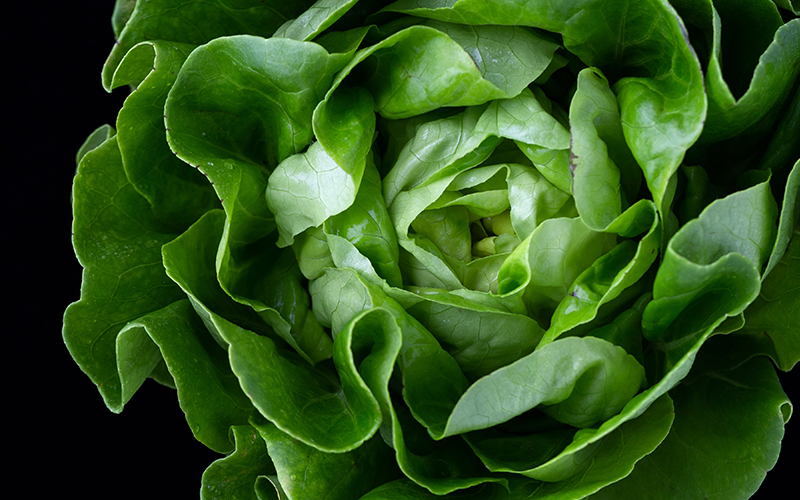

萵苣 Lactuca sativa
萵苣，又名生菜、萵菜、春菜，是菊科萵苣屬之一年生或 二年生草本植物，被人類當作蔬菜。原產於地中海一帶， 因適應性佳而目前普及溫帶、亞熱帶地區。
萵苣，又名生菜、萵菜、春菜，是菊科萵苣屬之一年生或 二年生草本植物，被人類當作蔬菜。原產於地中海一帶， 因適應性佳而目前普及溫帶、亞熱帶地區。
柑橘是對於野生及栽培環境中各種芸香科柑橘屬之水果統稱，包含各該物種、雜交種、變種及栽培品種； 具體而言，主要種類有柚、枸櫞、橘、柑、橙、酸橙、葡萄柚、檸檬、萊姆、和金柑等等。